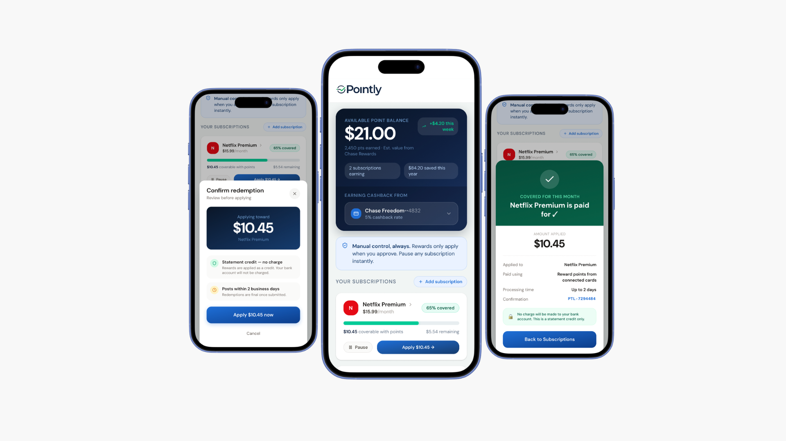
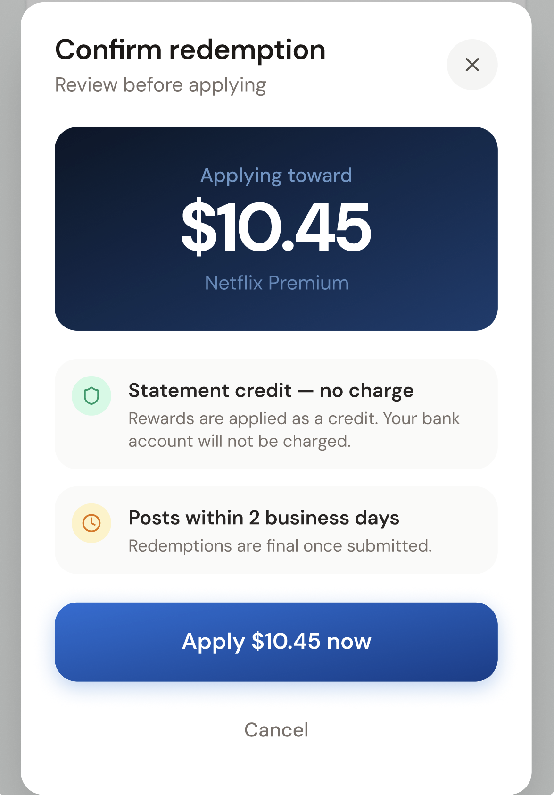
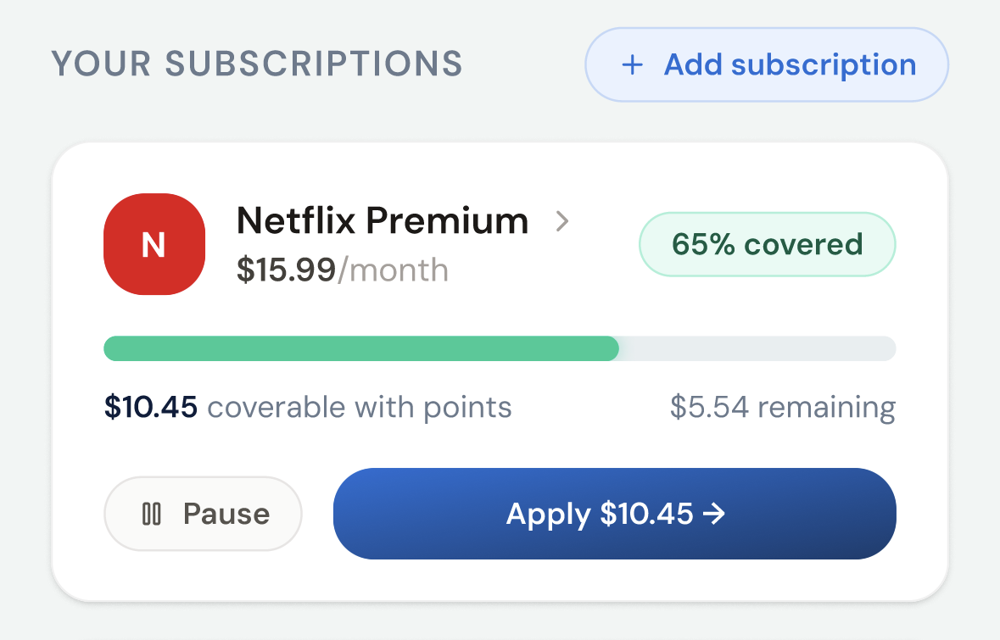
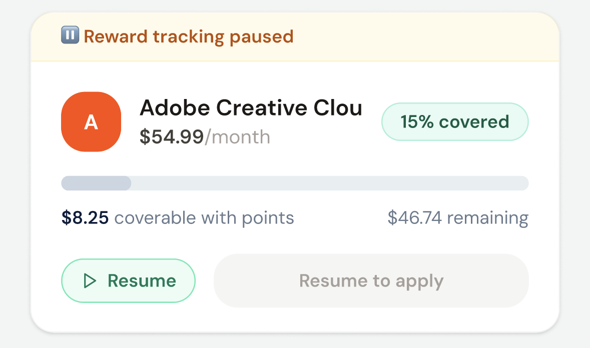
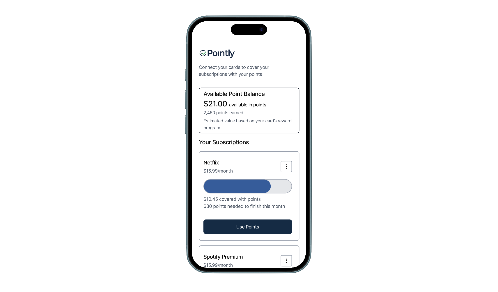
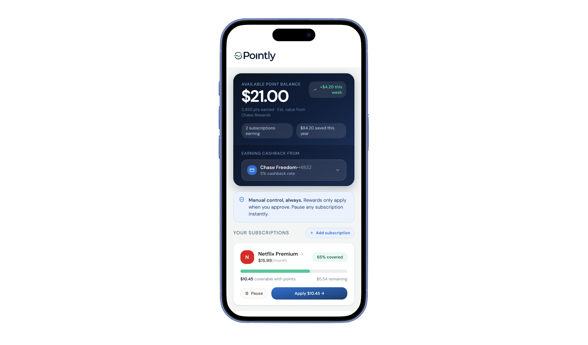
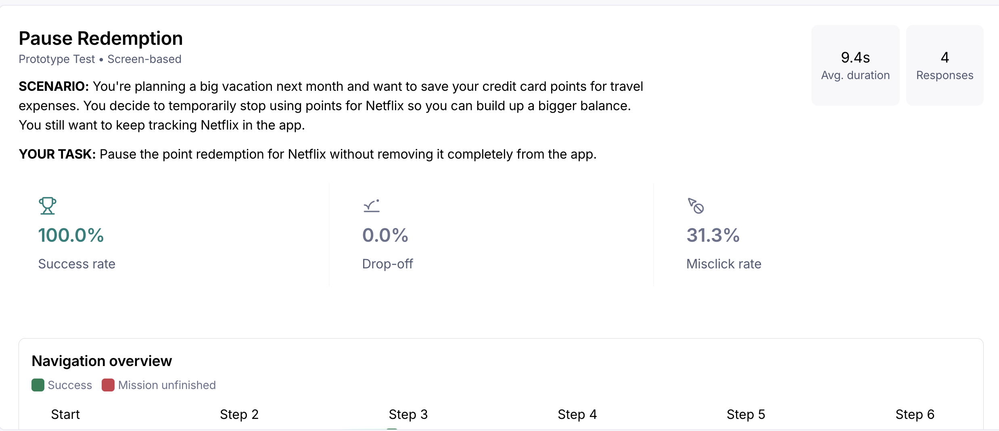
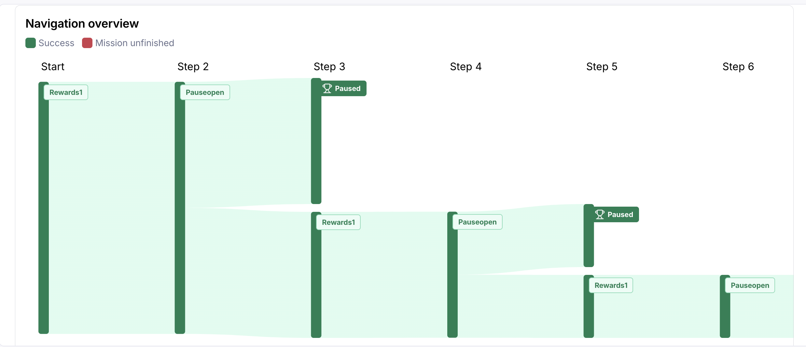

Turning everyday credit card points into the subscriptions people already pay for
I designed Pointly, a mobile app that tracks credit card reward points and lets users redeem them for subscriptions like Netflix and Spotify, with full manual control over every redemption.

The Problem Was Trust, Not Just UI
Reward points are valuable, but most people let them expire or never figure out how to use them. Existing redemption flows are buried, confusing, and feel risky.
The hard part wasn't the UI. It was trust: people don't want their points spent automatically without their say-so. Any solution that removed control (even to make things easier) would fail.
What the Survey Revealed
A needs-validation survey confirmed the problem and surfaced the key constraint: users reject automatic redemption by default.
Key Finding
Users want to stay in control: approve each redemption, see their progress, and be able to pause or turn it off. These findings became the core design requirements.
Three Principles from the Research
Every decision traces back to one of these three research-driven principles.
01
Manual Approval
Every redemption requires explicit confirmation via a clear "Use Points" action. Nothing happens without the user's say-so.

The redemption confirmation step: nothing is applied until the user explicitly approves.
02
Visible Progress
Progress indicators show points building toward a redeemable subscription. Users can see where they are and what they're working toward.

Progress toward covering a subscription stays visible, so points never feel like they vanish.
03
Easy Control
Pause and disable are always accessible. Users can opt out of any subscription pairing at any time without hunting through settings.

Pause and resume live directly on each subscription, no digging through settings.
High-Fidelity Prototype
The prototype was designed in Figma and covered the full user journey: connecting a card, viewing point balances, understanding progress toward a subscription, and completing a manual redemption via the "Use Points" flow.
Testing confirmed the core flow worked: all four participants completed every task. So v2 wasn't about fixing broken flows; it was about raising the ceiling. Guided by the one piece of qualitative feedback and my own heuristic review, I focused the redesign on making the trust-and-control model explicit, adding clear coverage status, and enriching the subscription view.
What Changed in v2
Each change traces back to the research insight that users need to feel in control, so v2 surfaces control and status that v1 only implied.

v1: Concept validated. The flow worked, but trust signals and subscription status were minimal.

v2: Control made explicit. A 'Manual control, always' banner up top, coverage badges (65% covered / Fully covered), service branding, and clear per-subscription actions (Apply / Pause / Resume).
Usability Study
Study Design
4 participants completed three goal-based tasks on their own phones via Maze (unmoderated), mirroring real conditions. Tasks mapped to the core requirements:
- Understanding the value/progress concept
- Completing the "Use Points" redemption flow
- Finding the pause/disable controls
Participants rated each task on a 7-point scale.
Results

Maze results: Pause Redemption task: 100% success, 0% drop-off, 31% misclick.

Navigation paths for the same task: every participant reached the paused state, but via routes of different lengths.
Every participant successfully paused the subscription, but a 31% misclick rate and the navigation paths told a subtler story: people reached the control by different routes, some looping between the rewards view and the pause screen before finding it. The task succeeded, but the path wasn't direct. That signal, alongside the qualitative feedback, directly informed making controls more prominent and the pause action more discoverable in v2.
"I would have liked some more options for things to do with my points."
One participant, post-test feedbackWith only one open comment across four participants, I treat this as a single signal rather than a trend, but it pointed directly at v2's direction: giving users more to do with their points.
What It Validated & What's Next
The study validated first-pass usability and comprehension: new users understood Pointly and completed the core flow without help.
It does not establish market demand or long-term behavior. The planned next steps are moderated interviews to understand the "why" behind usage and technical feasibility research toward an MVP.
Where Pointly Is Headed
The validated prototype confirmed the concept is learnable and the manual-control model resonates. Pointly is now moving toward technical feasibility and development, with moderated research planned to deepen behavioral insight before an MVP.
- First-pass usability and comprehension validated: new users completed the full core flow without assistance
- Manual-approval model confirmed as the right framing; no participants tried to find an "automatic" mode
- Refined v2 to make control and coverage status more discoverable, building on a validated flow, informed by misclick paths and qualitative feedback.
- Next: moderated interviews to understand behavioral "why" and technical feasibility research toward MVP